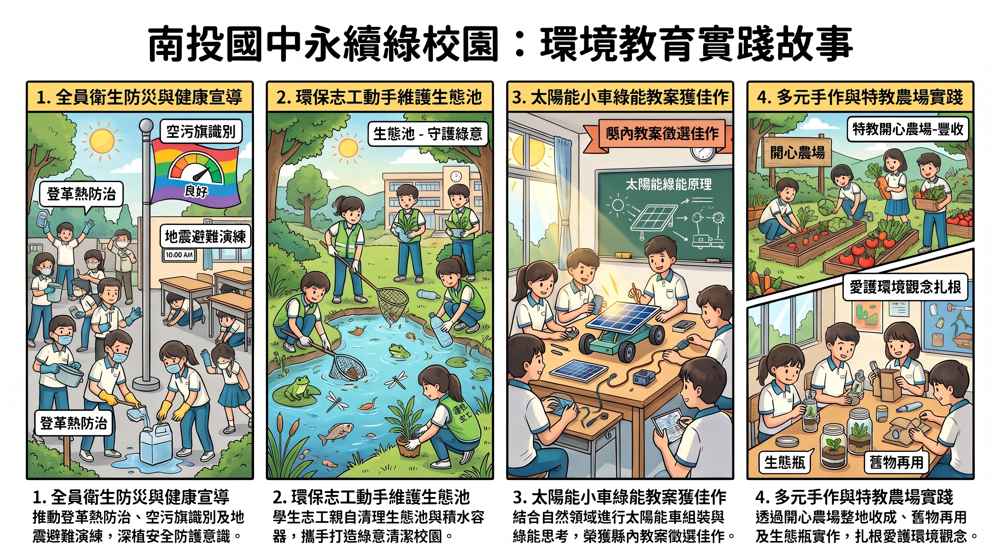

佐證照片高解析預覽
南投國中 115學年度環境教育考評佐證紀錄 ｜ 支援 ESC 鍵退出
針對到校訪視輔導量身打造：10~15分鐘口頭報告講稿、委員關鍵 Q&A 擬答防禦、27頁簡報校對診斷與指定任務檢核文件庫，全方位護航考評優異成果！
針對 10~15 分鐘口頭簡報量身打造：提煉亮點關鍵字、時間配比、口語化逐字稿與上台提詞指引。
⏱️ 建議演講總長：12 分鐘（保留 5~8 分鐘委員雙向交流）
🗣️ 建議語速與基調：每分鐘約 200~220 字，沉穩篤定、生動熱忱
🌟 四大必提亮眼數據：
直擊評鑑盲點與核心亮點：涵蓋法定 4 小時申報、學年度範疇、跨領域實施、海洋科普特優、生態池防蚊等 8 大關鍵防禦題庫。
| 頁次 | 原投影片現有內容 | 校對診斷與具體文字/排版優化建議 | 預覽簡報 |
|---|
訪視當日流程表、自評檢核項目、委員接待走讀動線與 110 張高解析度佐證相片庫。
完整紀錄南投國中全體親師生深耕環境教育之典範歷程，涵蓋組織制度、宣導研習、跨域教案與生態校園。
精選全縣教案佳作『AI 太陽能小車組裝』與全校首創『綠能年代。復古 fun 店趴』低碳嘉年華盛況。
115學年度環境教育整體校園空間生態導覽全景圖

完整 27 頁原始簡報原檔，已內建 110 張高解析度佐證相片，支援長官委員與全校教師隨時下載研閱。